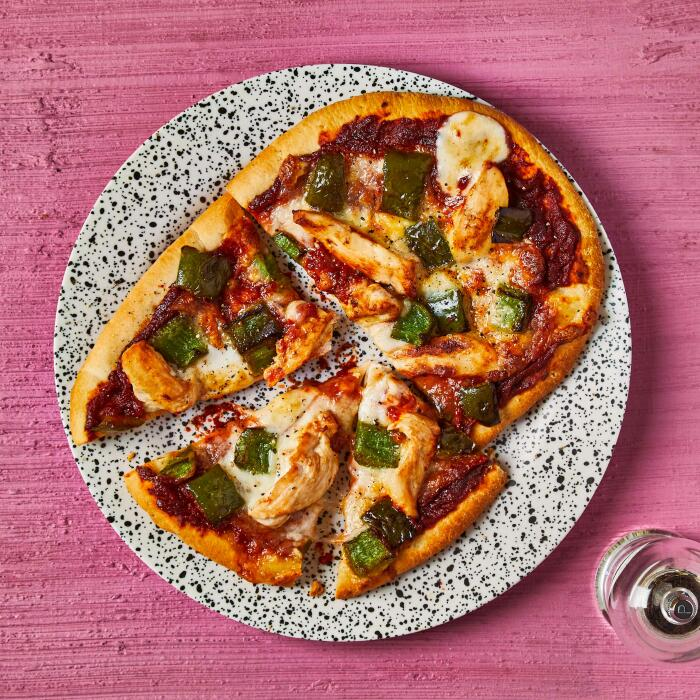

Smoky BBQ Chicken Pizza

Description
To make your own BBQ pizza, you'll spread sticky homemade BBQ sauce over a
flame-baked pizza base, and top with pan-fried free range chicken breast
and fresh mozzarella. Then just bake, slice and serve. Smokin'!
Ingredients
- Tomato paste (32g)
- British chicken breast portions (2pcs)
- Flame-baked pizza bases (2pcs)
- Ground smoked paprika (1tsp)
- Chipotle paste (20g)
- Green pepper
- Mozzarella (25g)
- Garlic clove
Steps
-
Preheat the oven to 200°C/ 180°C (fan)/ gas 6. Take your chicken out of
the fridge, open the packet and let it air. Put a large baking tray (or
two!) in the oven to heat up (this will stop the pizza bottom from going
soggy!). Slice your free range chicken breast portion[s] into thin
strips.
-
Cut your pepper[s] in half (scrape the seeds and pith out with a
teaspoon), then chop into small, bite-sized pieces. Peel and finely chop
(or grate) your garlic.
-
Heat a large, wide-based pan (preferably non-stick) with a drizzle of
olive oil over a medium-high heat. Once hot, add the sliced chicken and
chopped pepper with a pinch of salt and cook for 5-6 min on each side or
until the chicken is cooked through (no pink meat!).
-
Meanwhile, add your tomato paste to a jug with your ground smoked
paprika, chipotle paste (can't handle the heat? Go easy!), chopped
garlic and a generous grind of black pepper. Add 5 tbsp [7 1/2 tbsp] [10
tbsp] cold water and stir it all together – this is your BBQ sauce.
-
Drain your mozzarella, then pat it dry with kitchen paper (squeeze as
much liquid out as you can!). Tear the drained mozzarella into rough,
bite-sized pieces.
-
Remove the heated tray[s] from the oven and add your pizza base[s].
Divide the BBQ sauce between the pizza base[s] and spread it evenly all
over them with the back of a spoon. Top with the torn mozzarella.
-
Once the chicken is done, divide the cooked chicken & pepper evenly
between the pizza base[s]. Put the tray[s] in the oven for 12-15 min or
until the mozzarella has melted and the pizza base[s] is crisp – this is
your smoky BBQ free range chicken pizza. Serve the smoky BBQ free range
chicken pizza with a generous grind of black pepper. Enjoy!
Home